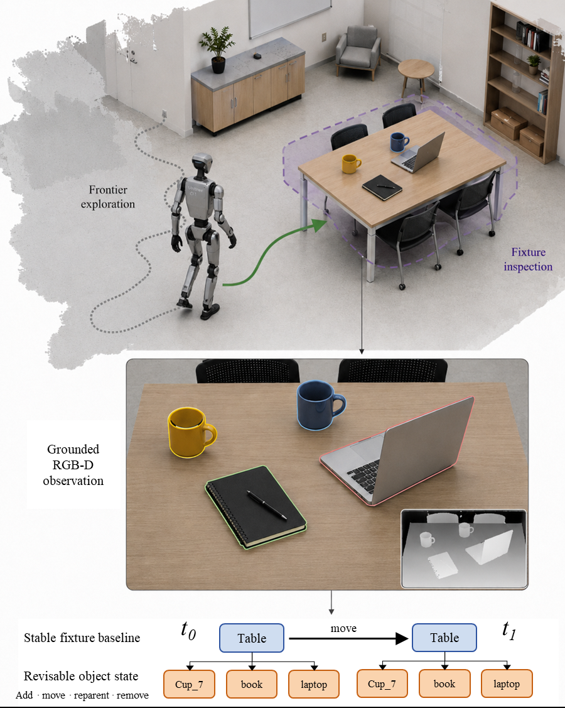
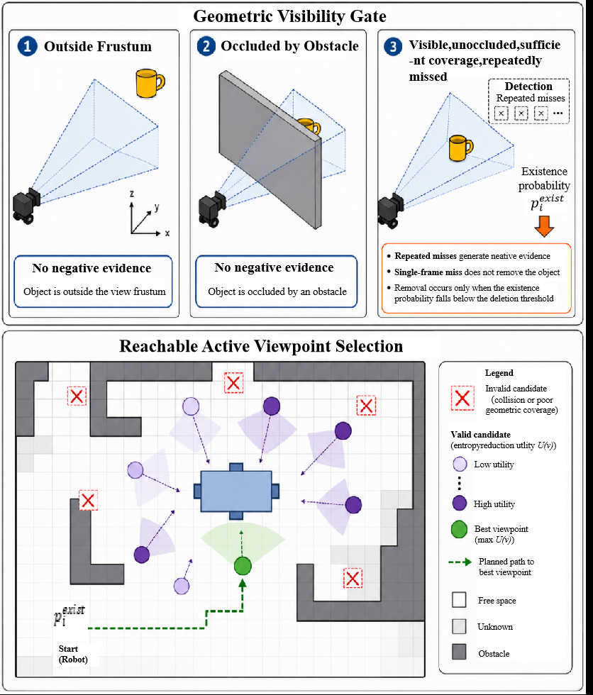
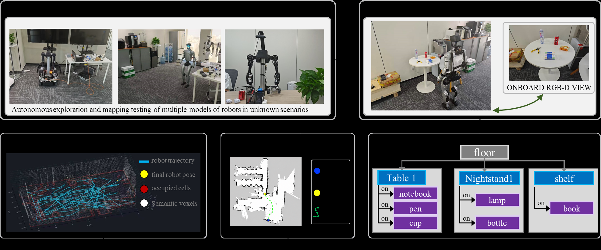

Bootstrap
Frontier exploration grows the map from an initially unknown environment and accumulates RGB-D evidence for stable fixture hypotheses.
A persistent world model that lets service robots discover stable structure, actively inspect uncertain fixtures, and revise object state without forgetting what remains.
Long-horizon service robots operate in environments where walls and fixtures change slowly, while cups, books, tools, and other task-relevant objects move constantly. Rebuilding a complete semantic map after every revisit fragments identity; treating every missed detection as absence deletes objects that may simply be occluded.
PBD-AG separates a verified stable-fixture baseline from a revisable stream of object events. Persistent nodes combine geometry, semantics, appearance, identity, existence, and support relations, while negative evidence is admitted only when an object should truly have been visible.

Stable fixture identities anchor a dynamic object layer across revisits.

Frontier exploration grows the map from an initially unknown environment and accumulates RGB-D evidence for stable fixture hypotheses.
Graph uncertainty schedules reachable fixture-centered viewpoints that balance coverage, travel, collision risk, and observation redundancy.
Close-range RGB-D observations ground fine objects and attach them to canonical fixture identities through support relations.
Visibility-gated evidence updates persistent beliefs and appends typed add, move, reparent, and remove events to an audit trail.
The geometric visibility gate rejects negative evidence when the predicted object lies outside the view frustum, is occluded by closer geometry, or has insufficient expected pixel support. When inspection is needed, PBD-AG searches only reachable, informative, and safe viewpoints.

Autonomous mapping, fixture discovery, active inspection, and persistent object-state updates in unseen indoor environments.
Onboard RGB-D and LiDAR sensing materialize a hierarchical scene graph while preserving canonical fixture identities.



Long-horizon service robots require persistent world models that can be built autonomously in unseen environments and revised as task-relevant objects change. Existing methods rely on online mapping, which accumulates localization and observation errors, static scene representations that cannot capture persistent object changes, or holistic vision-language predictions that lack verifiable 3D geometric evidence. We present PBD-AG, a persistent baseline-delta active graph framework that decouples robot-verified stable fixtures from revisable dynamic object events. The robot autonomously bootstraps the structural baseline from onboard exploration and inspects discovered fixtures to ground hierarchical object beliefs. PBD-AG maintains reliability-weighted object states over geometry, semantics, identity, existence, and support relations, using a geometric visibility gate to mitigate false deletions under occlusion. Inspection viewpoints are selected by a graph-conditioned policy that balances target coverage, travel cost, collision risk, and redundant observation. Simulation experiments in multiple environments and under controlled dynamic evaluation show higher aggregate coarse-fixture F1 than capability-matched controls, as well as stronger identity continuity and event recall. A qualitative physical-robot demonstration further illustrates integration with onboard sensing, providing a traceable world model for long-horizon robotic perception.